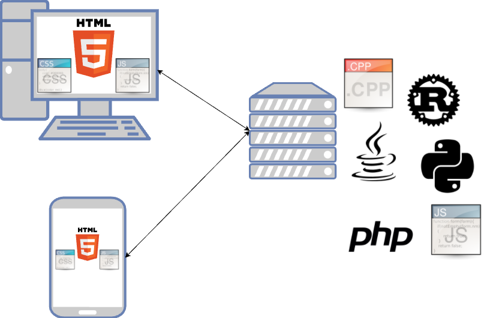

Introduzione
Cos'è una web app?
Finora abbiamo sviluppato un'applicazione che gira su una singola macchina. Questo ci pone però dei limiti: se volessimo giocare con un'altro giocatore in rete? Se volessimo salvare i nostri progressi e poi usare un altro dispositivo?
Per questi ed altri motivi negli ultimi anni si sono largamente diffuse le web application, cioè applicazione che vengono eseguite in parte sul browser della mia macchina ed in parte su una macchina server in rete.
Le web application sono un caso particolare di applicazioni distribuite, cioè applicazioni che girano su più macchine fisiche. Le web app nello specifico hanno un architettura client (il mio browser) - server (la macchina in rete) ed usano i protocolli e gli standard tipici del web (HTTP, REST-API, web sockets, JSON, etc.)

Per il lato client, la tecnologia è obbligata: i browser supportano solo HTML5, che è uno standard che utilizza HTML, CSS e JavaScript.
Per il lato server invece possiamo usare il linguaggio che preferiamo. I più usati sono :
- PHP
- Python
- Java
- C++ (non esiste un sito ufficiale, potete guardare questo)
- Rust (I ❤️ Rust)
- Go (linguaggio di Google)
- Scala (linguaggio simile a Java ma più orientato alla programmazione funzionale e più bello)
- Erlang (linguaggio per la programmazione funzionale)
- Ruby
- Haskell (linguaggio dichiarativo, ostico ma bello)
Noi useremo Python per la parte server.
Python & Flask
Per poter comunicare con il mondo esterno, la nostra applicazione in Python deve avere un componente che glielo permetta. In particolare questo componente dovrà:
- accettare le richieste dall'esterno e inoltrarle (route) alla nostra applicazione
- permettere alla nostra applicazione di rispondere alle richieste.
Questo componente si chiama framework web, ne esistono diversi per ogni linguaggio di programmazione e nel nostro caso useremo Flask.
Come usare Flask
Sul vostro computer
Nella vostra macchina di casa, per installare Flask basta aprire un terminale e lanciare il comando:
pip3 install flask
Per lanciare l'applicazione, basta scrivere:
flask run
Attenzione: per motivi di sicurezza l'applicazione di default è raggiungibile solo in locale attraverso l'interfaccia di loopback (127.0.0.1) e non da altri computer connessi in rete.
Sul server della scuola
La scuola mette a disposizione Flask per ogni utente della scuola. Per poterlo usare, basta creare una cartella che si chiami esattamente "flask" e usare quella per il progetto.
# sul server della scuola
cd ~
mkdir flask
cd flask
Il file che contiene flask deve avere il nome standard app.py.
In questo caso, non è necessario lanciare flask, perché il web server che gestisce tutta la macchina (nel nostro caso Apache) è già configurato per lanciare flask quando si accede a quella cartella.
Primi passi con Flask
Ora creiamo il file principale del nostro progetto, che chiamiamo esattamente app.py. Attenzione: il nome deve essere questo, altrimenti non funziona tutto automagicamente 🎩.
Nel nostro nuovo file, per prima cosa importiamo Flask:
from flask import Flask
Quindi creiamo un'istanza del framework. In Python, per creare l'istanza si una classe basta mettere il nome della classe (senza new) ed i parametri per l'inizializzazione. Nel caso di Flask, l'unico parametro obbligatorio è un nome scelto a piacere che ci servirà per riconoscere il nostro programma tra gli altri che girano sul server.
app = Flask("tris")
Ora creiamo una funzione che verrà richiamata quando accederemo alla radice del nostro sito. Per fare questo, dobbiamo usare l'annotazione @app.route() specificando come parametro il percorso che si deve gestire, nel nostro caso la radice \\; dopo l'annotazione la funzione che verrà chiamata e il cui valore di ritorno verrà restituito al browser.
@app.route("/")
def tris():
return "<h1>Gioco del tris!!</h1>"
Proviamo ad accedere alla nostra applicazione, o dal link locale (se lo lanciate dalla vostra macchina) o dal link della scuola. Il risultato dovrebbe essere come segue.
Gioco del tris!!
Codice completo (finora)
from flask import Flask
app = Flask("tris")
@app.route("/")
def tris():
return "<h1>Gioco del tris!!</h1>"